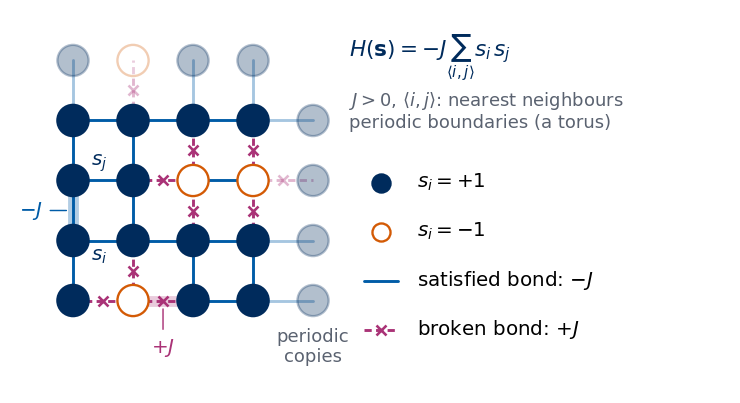
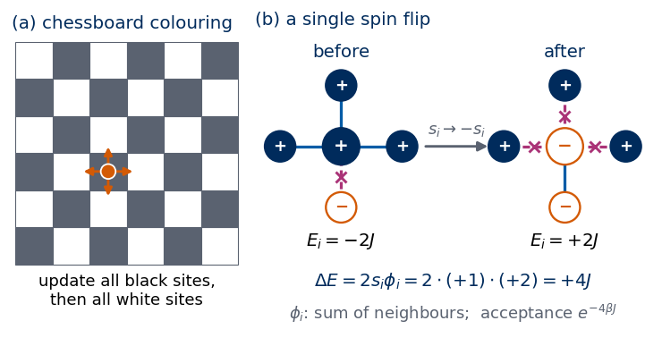
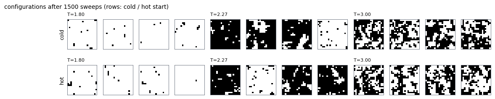
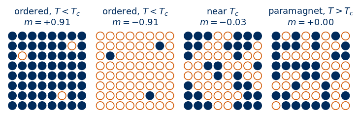
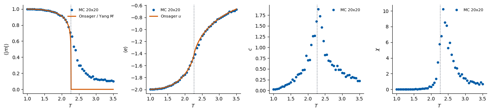
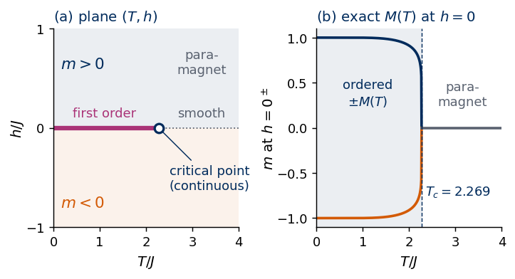

Lab 010 — Monte Carlo sampling of the 2D Ising model
A convolutional neural network (CNN) can locate the critical temperature \(T_c\) of the 2D Ising model from raw spin images. In this notebook we produce such images ourselves and compare their thermodynamics with Onsager’s exact solution.
We begin with the Metropolis algorithm for an \(N_x\times N_y\) lattice with periodic boundaries, in a vectorised checkerboard form that runs fast in NumPy. A sampler is only useful if it is used correctly, so we then study how long a chain must run before it forgets its starting point (equilibration) and how far apart stored samples must be to carry independent information (decorrelation). With these two answers we generate a dataset of configurations on a grid of temperatures and save it for Lab 011, which trains the CNN on it. Finally we measure the magnetisation, energy, specific heat and susceptibility, compare them with the exact results of Onsager and Yang, and watch the transition sharpen as the system grows, which is the logic behind finding \(T_c\).
The lattice size \((N_x, N_y)\) can be changed in Section 5; the default is \(20\times20\).
How to run this notebook in Google Colab 1. Go to https://colab.research.google.com → File → Upload notebook (or open it from Google Drive). 2. Run cells one by one with Shift + Enter. Run them in order — later cells use variables defined earlier. 3. The required packages (numpy, scipy, matplotlib) are pre-installed in Colab; no pip install required. 4. In Colab the saved dataset is lost when the runtime is recycled; download it if you want to keep it. 5. If the notebook state becomes inconsistent: Runtime → Restart session and run from the top.
Code
import os, timeimport numpy as npimport matplotlib.pyplot as pltfrom scipy.integrate import quadfrom scipy.special import ellipkrng = np.random.default_rng(0) # one random generator for the whole notebook (reproducible results)# UJ colours used in all plotsUJBlue, UJNavy, DSOrange, UJGray ="#005CA7", "#002B5C", "#D35A05", "#5A6270"plt.rcParams.update({"axes.spines.top": False, "axes.spines.right": False, "font.size": 10})TC =2.0/ np.log(1.0+ np.sqrt(2.0)) # exact critical temperature (J = k_B = 1), Kramers-Wannier / Onsagerprint(f"NumPy {np.__version__}; exact T_c = 2/ln(1+sqrt 2) = {TC:.6f}")
Spins \(s_i=\pm1\) sit on an \(N_x\times N_y\) square lattice with periodic boundary conditions (a torus), \(N=N_xN_y\). The energy is \[
H(\boldsymbol s) = -J\sum_{\langle i,j\rangle} s_i s_j , \qquad J=1,\ h=0,
\] where \(\langle i,j\rangle\) runs over the \(2N\) nearest-neighbour bonds. In equilibrium at temperature \(T\) (with \(k_B=1\), \(\beta=1/T\)) the configurations are distributed as \[
p(\boldsymbol s) = \frac{e^{-\beta H(\boldsymbol s)}}{Z}, \qquad Z=\sum_{\boldsymbol s} e^{-\beta H(\boldsymbol s)} .
\]
The figure below draws a small patch of the lattice. Each disc is a spin: a filled navy disc is \(s_i=+1\) and a white disc with an orange rim is \(s_i=-1\), the convention of every sketch in this course. A line between two neighbours is a bond, and its contribution \(-Js_is_j\) to the energy is \(-J\) when the two spins agree (solid blue line, a satisfied bond) and \(+J\) when they disagree (dashed purple line with a cross, a broken bond). The faded discs on the right and on the top are copies of the first column and of the first row: with periodic boundaries the right neighbour of a spin in the last column is the spin in the first column of the same row, and likewise for the top row, so the lattice has no edges and has the topology of a torus. Every broken bond raises the energy by \(2J\), so the two uniform configurations, all up and all down, are the ground states.
Code
# Schematic figure; this cell does not depend on any other cell of the notebook.# Colour convention shared by all sketches of the course:# spin s = +1: filled navy disc, spin s = -1: white disc with an orange rim;# satisfied bond: solid blue line, broken (frustrated) bond: dashed purple line marked with a cross.# The figure is drawn at its physical size on a 16:9 slide (5.5 in = full text width) with 10-12 pt text,# and shown here at a higher screen resolution.import osimport numpy as npimport matplotlib.pyplot as pltimport matplotlib.patches as mpatchesNAVY, ORANGE, BLUE, GRAY, PURPLE, GREEN ="#002B5C", "#D35A05", "#005CA7", "#5A6270", "#AA3377", "#228833"SKETCH_STYLE = {"font.size": 11, "axes.titlesize": 12, "axes.labelsize": 11, "xtick.labelsize": 10,"ytick.labelsize": 10, "legend.fontsize": 10, "figure.dpi": 130, "lines.linewidth": 1.5,"axes.spines.top": False, "axes.spines.right": False}def save_sketch(fig, name, extra_dirs=()):# PNG copy for the lecture slides: white background, 300 dpi, included at its physical width os.makedirs("figures", exist_ok=True)for d in ("figures",) +tuple(d for d in extra_dirs if os.path.isdir(d)): fig.savefig(os.path.join(d, name), dpi=300, facecolor="white")def draw_spin(ax, x, y, s, r=0.26, sign=False, alpha=1.0, fs=10, lw=1.3):# one Ising spin at (x, y): navy disc for s = +1, white disc with orange rim for s = -1 (optionally with "+" / "-") face, edge, txt = (NAVY, NAVY, "white") if s >0else ("white", ORANGE, ORANGE) ax.add_patch(mpatches.Circle((x, y), r, fc=face, ec=edge, lw=lw, alpha=alpha, zorder=4))if sign: ax.text(x, y, "+"if s >0else"−", color=txt, ha="center", va="center", alpha=alpha, fontsize=fs, fontweight="bold", zorder=5)def draw_bond(ax, p, q, broken=False, lw=1.5, alpha=1.0, color=None, cross=True):# bond between points p and q: solid blue if satisfied, dashed purple with a cross if broken c = color or (PURPLE if broken else BLUE) ax.plot([p[0], q[0]], [p[1], q[1]], color=c, lw=lw, ls=(0, (2.5, 1.5)) if broken else"-", alpha=alpha, solid_capstyle="round", zorder=2)if broken and cross: ax.plot((p[0] + q[0]) /2, (p[1] + q[1]) /2, marker="x", ms=3.5* lw, mew=lw *0.9, color=c, alpha=alpha, zorder=3)def sketch_ising_model():# a 4 x 4 patch of the periodic lattice with a fixed, mostly ordered spin pattern; S[y, x], y = row from the bottom L =4 S = np.ones((L, L), int) S[2, 2] = S[2, 3] =-1# a small domain of two flipped spins S[0, 1] =-1# and one isolated flipped spin fig = plt.figure(figsize=(5.5, 2.9)) ax = fig.add_axes([0.0, 0.0, 0.47, 1.0]); tx = fig.add_axes([0.47, 0.0, 0.53, 1.0]); tx.axis("off")# nearest-neighbour bonds inside the patch (right and up neighbours) and the periodic bonds to the ghost copiesfor y inrange(L):for x inrange(L):for dx, dy in [(1, 0), (0, 1)]: xn, yn = x + dx, y + dy s_n = S[yn % L, xn % L] # periodic boundaries: index modulo L ghost = xn == L or yn == L draw_bond(ax, (x, y), (xn, yn), broken=S[y, x] * s_n <0, lw=1.6, alpha=0.35if ghost else1.0)# ghost copies of column 1 (right) and row 1 (top): the same spins seen again through the periodic boundaryfor k inrange(L): draw_spin(ax, L, k, S[k, 0], alpha=0.3); draw_spin(ax, k, L, S[0, k], alpha=0.3)for y inrange(L):for x inrange(L): draw_spin(ax, x, y, S[y, x]) ax.text(L, -0.45, "periodic\ncopies", ha="center", va="top", fontsize=10, color=GRAY)# one satisfied and one broken bond, annotated with their energies i, j = (0, 1), (0, 2) # s_i = s_j = +1: a satisfied bond ax.plot(*zip(i, j), color=BLUE, lw=6, alpha=0.3, zorder=1) ax.annotate(r"$-J$", xy=(-0.05, 1.5), xytext=(-0.5, 1.5), fontsize=11, ha="right", va="center", color=BLUE, arrowprops=dict(arrowstyle="-", color=BLUE, lw=0.8)) ax.text(i[0] +0.3, i[1] -0.1, "$s_i$", fontsize=11, ha="left", va="top", color=NAVY) ax.text(j[0] +0.3, j[1] +0.1, "$s_j$", fontsize=11, ha="left", va="bottom", color=NAVY) k, l = (1, 0), (2, 0) # s = -1 next to s = +1: a broken bond ax.plot(*zip(k, l), color=PURPLE, lw=6, alpha=0.25, zorder=1) ax.annotate(r"$+J$", xy=(1.5, -0.08), xytext=(1.5, -0.6), fontsize=11, ha="center", va="top", color=PURPLE, arrowprops=dict(arrowstyle="-", color=PURPLE, lw=0.8)) ax.set_xlim(-1.0, L +0.6); ax.set_ylim(-1.15, L +0.45); ax.set_aspect("equal"); ax.axis("off")# Hamiltonian and legend tx.set_xlim(0, 1); tx.set_ylim(0, 1) tx.text(0.0, 0.88, r"$H(\mathbf{s})=-J\sum_{\langle i,j\rangle}s_i\,s_j$", fontsize=12, color=NAVY, va="center") tx.text(0.0, 0.74, r"$J>0$, $\langle i,j\rangle$: nearest neighbours""\nperiodic boundaries (a torus)", fontsize=10, color=GRAY, va="center") rows = [("spin", +1, r"$s_i=+1$"), ("spin", -1, r"$s_i=-1$"), ("bond", False, r"satisfied bond: $-J$"), ("bond", True, r"broken bond: $+J$")]for n, (kind, val, label) inenumerate(rows): yy =0.55-0.13* nif kind =="spin": tx.plot(0.085, yy, "o", ms=10, mfc=NAVY if val >0else"white", mec=NAVY if val >0else ORANGE, mew=1.3)else: draw_bond(tx, (0.04, yy), (0.13, yy), broken=val, lw=1.6) tx.text(0.18, yy, label, fontsize=11, va="center")return figwith plt.rc_context(SKETCH_STYLE): fig = sketch_ising_model()save_sketch(fig, "sketch_ising_card.png")plt.show()

For one configuration we measure the energy per spin and the magnetisation per spin, \[
e(\boldsymbol s)=\frac{H(\boldsymbol s)}{N}, \qquad m(\boldsymbol s) = \frac1N\sum_i s_i .
\] Thermal averages \(\langle\cdot\rangle\) are averages over samples drawn from \(p(\boldsymbol s)\), and two fluctuation quantities follow from the variances: \[
\begin{aligned}
c &= \frac{N}{T^2}\left(\langle e^2\rangle-\langle e\rangle^2\right) && \text{(specific heat per spin)},\\
\chi &= \frac{N}{T}\left(\langle m^2\rangle-\langle |m|\rangle^2\right) && \text{(susceptibility per spin)}.
\end{aligned}
\] The absolute value in \(\chi\) needs a word of explanation. On a finite lattice the two ordered states \(m\approx+M\) and \(m\approx-M\) have equal probability, so \(\langle m\rangle=0\) at every temperature, and the useful finite-size order parameter is \(\langle|m|\rangle\).
We cannot sum over all \(2^N\) configurations (\(2^{400}\) for \(20\times20\)), so we sample them.
2. The Metropolis algorithm
The idea is to build a Markov chain \(\boldsymbol s^{(0)}\to\boldsymbol s^{(1)}\to\dots\) whose stationary distribution is \(p(\boldsymbol s)\). A sufficient condition on the transition probabilities \(W\) is detailed balance: \[
p(\boldsymbol s)\,W(\boldsymbol s\to\boldsymbol s') = p(\boldsymbol s')\,W(\boldsymbol s'\to\boldsymbol s).
\] The Metropolis algorithm satisfies it as follows. We propose to flip one spin, \(s_i\to-s_i\). Only the four bonds of site \(i\) change, so with the local field \(\phi_i=\sum_{j\in\mathrm{nn}(i)}s_j\)\[
\Delta E = E(\boldsymbol s') - E(\boldsymbol s) = 2\,s_i\,\phi_i \in\{-8,-4,0,4,8\}.
\] The flip is accepted with probability \(A=\min\left(1,e^{-\beta\Delta E}\right)\). For \(\Delta E>0\) detailed balance holds because \[
\begin{aligned}
\frac{W(\boldsymbol s\to\boldsymbol s')}{W(\boldsymbol s'\to\boldsymbol s)}
&=\frac{e^{-\beta\Delta E}}{1}
=\frac{e^{-\beta E(\boldsymbol s')}}{e^{-\beta E(\boldsymbol s)}}\\
&=\frac{p(\boldsymbol s')}{p(\boldsymbol s)} ,
\end{aligned}
\] and the case \(\Delta E<0\) is the same equation read backwards. The partition function \(Z\) cancels, which is why we never need it.
To make the algorithm fast we colour the lattice like a chessboard. All four neighbours of a black site are white, so the flips of all black sites are independent of each other and can be carried out at once, followed by all white sites. One sweep, black half plus white half, is one attempted flip per spin (one Monte Carlo step). With periodic boundaries the chessboard colouring is consistent only if \(N_x\) and \(N_y\) are even. We also update a whole batch of independent lattices (several chains times several temperatures) in one array operation, on arrays of shape (..., Ny, Nx).
The sketch below shows both ideas. On the left, the sites of a \(6\times6\) lattice are coloured like a chessboard; the four neighbours of the highlighted dark site are all light, so the new values of all dark spins depend only on light spins and can be drawn at the same time. On the right is a single proposed flip. The central spin \(s_i=+1\) has three neighbours up and one down, so its local field is \(\phi_i=2\). Before the flip three of its four bonds are satisfied and their energy is \(-2J\); after the flip three are broken and their energy is \(+2J\). The energy change \(\Delta E=2s_i\phi_i=+4J\) is positive, so the flip is accepted only with probability \(e^{-4\beta J}\), while the reverse flip, with \(\Delta E=-4J\), would always be accepted.
Code
# Schematic figure; this cell does not depend on any other cell of the notebook.# Colour convention shared by all sketches of the course:# spin s = +1: filled navy disc, spin s = -1: white disc with an orange rim;# satisfied bond: solid blue line, broken (frustrated) bond: dashed purple line marked with a cross.# The figure is drawn at its physical size on a 16:9 slide (5.5 in = full text width) with 10-12 pt text,# and shown here at a higher screen resolution.import osimport numpy as npimport matplotlib.pyplot as pltimport matplotlib.patches as mpatchesNAVY, ORANGE, BLUE, GRAY, PURPLE, GREEN ="#002B5C", "#D35A05", "#005CA7", "#5A6270", "#AA3377", "#228833"SKETCH_STYLE = {"font.size": 11, "axes.titlesize": 12, "axes.labelsize": 11, "xtick.labelsize": 10,"ytick.labelsize": 10, "legend.fontsize": 10, "figure.dpi": 130, "lines.linewidth": 1.5,"axes.spines.top": False, "axes.spines.right": False}def save_sketch(fig, name, extra_dirs=()):# PNG copy for the lecture slides: white background, 300 dpi, included at its physical width os.makedirs("figures", exist_ok=True)for d in ("figures",) +tuple(d for d in extra_dirs if os.path.isdir(d)): fig.savefig(os.path.join(d, name), dpi=300, facecolor="white")def draw_spin(ax, x, y, s, r=0.26, sign=False, alpha=1.0, fs=10, lw=1.3):# one Ising spin at (x, y): navy disc for s = +1, white disc with orange rim for s = -1 (optionally with "+" / "-") face, edge, txt = (NAVY, NAVY, "white") if s >0else ("white", ORANGE, ORANGE) ax.add_patch(mpatches.Circle((x, y), r, fc=face, ec=edge, lw=lw, alpha=alpha, zorder=4))if sign: ax.text(x, y, "+"if s >0else"−", color=txt, ha="center", va="center", alpha=alpha, fontsize=fs, fontweight="bold", zorder=5)def draw_bond(ax, p, q, broken=False, lw=1.5, alpha=1.0, color=None, cross=True):# bond between points p and q: solid blue if satisfied, dashed purple with a cross if broken c = color or (PURPLE if broken else BLUE) ax.plot([p[0], q[0]], [p[1], q[1]], color=c, lw=lw, ls=(0, (2.5, 1.5)) if broken else"-", alpha=alpha, solid_capstyle="round", zorder=2)if broken and cross: ax.plot((p[0] + q[0]) /2, (p[1] + q[1]) /2, marker="x", ms=3.5* lw, mew=lw *0.9, color=c, alpha=alpha, zorder=3)def sketch_checkerboard_and_flip(): fig = plt.figure(figsize=(5.5, 2.9)) ax1 = fig.add_axes([0.0, 0.0, 0.36, 0.9]); ax2 = fig.add_axes([0.38, 0.0, 0.62, 0.9])# (a) chessboard colouring of a 6 x 6 lattice: a site is "black" if x + y is even L =6for y inrange(L):for x inrange(L): ax1.add_patch(mpatches.Rectangle((x -0.5, y -0.5), 1, 1, fc=GRAY if (x + y) %2==0else"white", ec=GRAY, lw=0.6)) c = (2, 2) # a black site and its four white neighboursfor dx, dy in [(1, 0), (-1, 0), (0, 1), (0, -1)]: ax1.annotate("", xy=(c[0] +0.75* dx, c[1] +0.75* dy), xytext=c, arrowprops=dict(arrowstyle="-|>", color=ORANGE, lw=1.6, mutation_scale=10)) ax1.add_patch(mpatches.Circle(c, 0.2, fc=ORANGE, ec="white", lw=1, zorder=5)) ax1.text((L -1) /2, -0.75, "update all black sites,\nthen all white sites", ha="center", va="top", fontsize=10) ax1.set_title("(a) chessboard colouring", fontsize=11, color=NAVY, loc="left") ax1.set_xlim(-0.6, L -0.4); ax1.set_ylim(-2.3, L -0.4); ax1.set_aspect("equal"); ax1.axis("off")# (b) one proposed flip: centre spin s_i = +1 with neighbours (+1, +1, +1, -1), local field phi_i = 2 nb = {(1, 0): +1, (0, 1): +1, (-1, 0): +1, (0, -1): -1} phi =sum(nb.values())for x0, s_c, label in [(0.0, +1, "before"), (4.4, -1, "after")]:for (dx, dy), s in nb.items(): draw_bond(ax2, (x0, 0), (x0 +1.2* dx, 1.2* dy), broken=s_c * s <0, lw=1.8) draw_spin(ax2, x0 +1.2* dx, 1.2* dy, s, r=0.3, sign=True) draw_spin(ax2, x0, 0, s_c, r=0.36, sign=True, fs=11) e_loc =-sum(s_c * s for s in nb.values()) # energy of the four bonds of site i (J = 1) ax2.text(x0, 1.75, label, ha="center", fontsize=11, color=NAVY) ax2.text(x0, -1.95, f"$E_i={e_loc:+d}J$", ha="center", fontsize=11) ax2.annotate("", xy=(2.95, 0), xytext=(1.6, 0), arrowprops=dict(arrowstyle="-|>", color=GRAY, lw=1.6, mutation_scale=12)) ax2.text(2.27, 0.25, r"$s_i\to{-s_i}$", ha="center", fontsize=10, color=GRAY) ax2.text(2.2, -2.75, rf"$\Delta E=2s_i\phi_i=2\cdot(+1)\cdot({phi:+d})={2* phi:+d}J$", ha="center", fontsize=11, color=NAVY) ax2.text(2.2, -3.4, r"$\phi_i$: sum of neighbours; acceptance $e^{-4\beta J}$", ha="center", fontsize=10, color=GRAY) ax2.set_title("(b) a single spin flip", fontsize=11, color=NAVY, loc="left") ax2.set_xlim(-1.7, 6.1); ax2.set_ylim(-3.7, 2.2); ax2.set_aspect("equal"); ax2.axis("off")return figwith plt.rc_context(SKETCH_STYLE): fig = sketch_checkerboard_and_flip()save_sketch(fig, "sketch_ising_checkerboard_flip.png")plt.show()

Code
def show_spins(ax, s):# Draw a spin configuration as a black/white image with a thin frame. ax.imshow(s, cmap="gray", vmin=-1, vmax=1) ax.set_xticks([]); ax.set_yticks([])for sp in ax.spines.values(): sp.set_visible(True); sp.set_color(UJGray); sp.set_linewidth(0.6)def checkerboard_masks(Ny, Nx):# Boolean masks of the 'black' and 'white' sites of an Ny x Nx chessboard.assert Nx %2==0and Ny %2==0, "checkerboard updates with periodic boundaries need even Nx and Ny" y, x = np.indices((Ny, Nx)) black = (x + y) %2==0return black, ~blackdef local_field(s):# Sum of the four nearest neighbours of every site; np.roll implements the periodic boundaries.return (np.roll(s, 1, axis=-1) + np.roll(s, -1, axis=-1)+ np.roll(s, 1, axis=-2) + np.roll(s, -1, axis=-2))def metropolis_sweep(s, beta, masks, rng):# One Monte Carlo sweep (in place). s: float32 array (..., Ny, Nx) of +-1; beta broadcastable to s.for mask in masks: # first all black sites, then all white sites dE =2.0* s * local_field(s) # energy change if the spin is flipped accept = rng.random(s.shape, dtype=np.float32) < np.exp(-beta * dE) # dE <= 0 gives exp >= 1: always accepted s[...] = np.where(mask & accept, -s, s)return sdef energy_per_spin(s):# e = H/N = -(1/N) sum over bonds; each bond counted once via the right and down neighbours. bonds = s * np.roll(s, -1, axis=-1) + s * np.roll(s, -1, axis=-2)return-bonds.mean(axis=(-2, -1))def magnetisation_per_spin(s):return s.mean(axis=(-2, -1))
Before relying on the sampler we test it where the exact answer is available. On a small \(4\times4\) lattice we can enumerate all \(2^{16}=65\,536\) configurations and compute \(\langle e\rangle\) and \(\langle|m|\rangle\)exactly; the sampler must reproduce them within its statistical error. In the output the Monte Carlo values agree with the exact ones to within about two error bars at all three temperatures.
Code
def exact_small(Ny, Nx, T):# Exact averages by brute-force enumeration of all 2^(Nx*Ny) configurations. n = Nx * Ny idx = np.arange(2**n, dtype=np.int64) s = (((idx[:, None] >> np.arange(n)) &1) *2-1).reshape(-1, Ny, Nx).astype(np.float32) e, m = energy_per_spin(s), magnetisation_per_spin(s) w = np.exp(-n * (e - e.min()) / T) # Boltzmann weights (shifted for numerical safety) w /= w.sum()return (w * e).sum(), (w * np.abs(m)).sum()masks4 = checkerboard_masks(4, 4)for T in (1.5, 2.5, 3.5): s = np.ones((2000, 4, 4), np.float32) # 2000 independent chainsfor _ inrange(300): metropolis_sweep(s, 1.0/ T, masks4, rng) e_mc, m_mc = [], []for _ inrange(200): # 200 more sweeps, measuring after each metropolis_sweep(s, 1.0/ T, masks4, rng) e_mc.append(energy_per_spin(s)); m_mc.append(np.abs(magnetisation_per_spin(s))) e_mc, m_mc = np.array(e_mc), np.array(m_mc) e_ex, m_ex = exact_small(4, 4, T) err =lambda a: a.mean(axis=0).std() / np.sqrt(a.shape[1]) # error bar from the spread between chainsprint(f"T = {T}: <e> MC = {e_mc.mean():+.4f} +- {err(e_mc):.4f} exact = {e_ex:+.4f} |"f" <|m|> MC = {m_mc.mean():.4f} +- {err(m_mc):.4f} exact = {m_ex:.4f}")
T = 1.5: <e> MC = -1.9500 +- 0.0003 exact = -1.9506 | <|m|> MC = 0.9860 +- 0.0001 exact = 0.9862
T = 2.5: <e> MC = -1.3776 +- 0.0014 exact = -1.3791 | <|m|> MC = 0.7643 +- 0.0007 exact = 0.7647
T = 3.5: <e> MC = -0.7777 +- 0.0011 exact = -0.7762 | <|m|> MC = 0.4887 +- 0.0006 exact = 0.4884
3. Equilibration time
A chain starts from an arbitrary configuration, which is not typical for \(p(\boldsymbol s)\), so we discard the first sweeps (the burn-in) until the observables stop drifting. Two starting points are natural: a cold start with all spins up (the \(T=0\) ground state) and a hot start with random spins (\(T=\infty\)). When chains from both starts reach the same values, they have very likely forgotten where they began. The cell below follows \(|m|\) and \(e\) along 1500 sweeps for four chains of each kind at \(T = 1.8\), \(2.27\) and \(3.0\), on a logarithmic time axis.
At \(T=3.0\), in the disordered phase, both starts merge after a few sweeps. At \(T=1.8\), in the ordered phase, a hot start must coarsen: domains of up and down spins grow and merge. Sometimes two domains wrap around the torus as stripes, separated by two flat domain walls. A flat wall costs energy but has no curvature to shrink it, so it can survive for a very long time, and such a chain would sit at \(|m|\) well below the ordered value, with a slightly higher energy. Whether this happens depends on the random seed; rerun the cell with another seed or more chains and look at the final snapshots below. At \(T\approx T_c\) the fluctuations are large and slow, a phenomenon called critical slowing down.
For the dataset we therefore use a cold start: below \(T_c\) it is already close to equilibrium, and above \(T_c\) it melts quickly.
Code
fig, axes = plt.subplots(2, 3* n_chains_demo, figsize=(13, 2.6))for r, name inenumerate(("cold", "hot")): s_final = series[name][2]for k inrange(len(T_demo)):for c inrange(n_chains_demo): ax = axes[r, k * n_chains_demo + c] show_spins(ax, s_final[c, k])if c ==0: ax.set_title(f"T={T_demo[k]:.2f}", fontsize=8, loc="left") axes[r, 0].set_ylabel(name, fontsize=9)fig.suptitle(f"configurations after {n_sweeps} sweeps (rows: cold / hot start)", x=0.01, ha="left", fontsize=10)plt.show()

4. Autocorrelation of the chain
Consecutive configurations of a Markov chain are correlated, because one sweep changes only part of the lattice. For an observable \(O\) (here \(|m|\)) the normalised autocorrelation function is \[
\begin{aligned}
C_O(t) &= \frac{\langle O_{t_0}O_{t_0+t}\rangle - \langle O\rangle^2}{\langle O^2\rangle-\langle O\rangle^2},\\
C_O(0) &= 1,
\end{aligned}
\] and the integrated autocorrelation time is \[
\tau_{\rm int} = \frac12 + \sum_{t\geq1} C_O(t).
\] Out of \(n\) consecutive measurements only about \(n/(2\tau_{\rm int})\) are effectively independent. We sum \(C_O(t)\) up to the first time it drops below zero, since beyond that point the estimate is noise. Two remedies follow, and we use both: store samples only every \(2\tau_{\rm int}\) sweeps or more, and run many independent chains. The cell below measures \(\tau_{\rm int}\) at five temperatures across the transition.
Code
def autocorrelation(x):# x: (time, chains). Normalised autocorrelation averaged over chains, computed with the FFT. x = x - x.mean(axis=0) n = x.shape[0] f = np.fft.rfft(x, n=2* n, axis=0) acf = np.fft.irfft(f * np.conj(f), axis=0)[:n].mean(axis=1)return acf / acf[0]def tau_int(acf): cut = np.argmax(acf <0) if np.any(acf <0) elselen(acf) # stop at the first negative valuereturn0.5+ acf[1:cut].sum()T_acf = np.array([1.8, 2.1, 2.27, 2.5, 3.0], dtype=np.float32)n_chains_acf, n_eq_acf, n_meas_acf =32, 1000, 3000s = np.ones((n_chains_acf, len(T_acf), 20, 20), np.float32)beta = (1.0/ T_acf)[None, :, None, None]for _ inrange(n_eq_acf): metropolis_sweep(s, beta, masks_demo, rng)absm = np.empty((n_meas_acf, n_chains_acf, len(T_acf)), np.float32)for t inrange(n_meas_acf): metropolis_sweep(s, beta, masks_demo, rng) absm[t] = np.abs(magnetisation_per_spin(s))fig, ax = plt.subplots(figsize=(6.5, 3.6))acf_colours = [UJNavy, UJBlue, DSOrange, "#E3A23B", UJGray]acf_styles = ["-", "--", "-", "--", ":"]taus = {}for k, T inenumerate(T_acf): acf = autocorrelation(absm[:, :, k]) taus[T] = tau_int(acf) ax.plot(acf[:300], color=acf_colours[k], ls=acf_styles[k], lw=2, label=fr"$T={T:.2f}$, $\tau_{{\rm int}}={taus[T]:.1f}$")ax.axhline(0, color=UJGray, lw=0.8)ax.set_xlabel("time lag $t$ (sweeps)"); ax.set_ylabel(r"$C_{|m|}(t)$"); ax.legend(frameon=False, fontsize=8)ax.set_title("20x20: autocorrelation of |m|", loc="left"); plt.show()for T, tau in taus.items():print(f"T = {T:.2f}: tau_int = {tau:6.1f} sweeps")
T = 1.80: tau_int = 1.3 sweeps
T = 2.10: tau_int = 7.2 sweeps
T = 2.27: tau_int = 14.8 sweeps
T = 2.50: tau_int = 8.2 sweeps
T = 3.00: tau_int = 1.7 sweeps
The autocorrelation time is largest close to \(T_c\), \(14.8\) sweeps at \(T=2.27\) against \(1.3\) at \(T=1.8\) and \(1.7\) at \(T=3.0\). This is critical slowing down again: near \(T_c\) the correlated regions are large, and a local single-spin update needs many sweeps to change them. Cluster algorithms such as that of Wolff [U. Wolff, Phys. Rev. Lett. 62, 361 (1989), doi:10.1103/PhysRevLett.62.361] largely avoid the problem. We stay with Metropolis because it is simple and is the algorithm used for the Ising data in Section 2.5.2 of the course book (T. Heightman and M. Płodzień, Deep Learning in Classical and Quantum Physics, arXiv:2508.10666).
In the dataset below we run 20 independent chains per temperature and store a configuration every n_between sweeps. Compared with the values of \(\tau_{\rm int}\) printed above, the stored samples of one chain are practically independent far from \(T_c\); close to \(T_c\) they are not fully independent, but the 20 chains are.
5. The dataset
We sample a grid of temperatures from \(T=1.0\) to \(T=3.5\) in steps of \(0.05\). All temperatures and all chains are updated together as one array of shape (chains, temperatures, Ny, Nx).
The Ising energy is symmetric under a global spin flip\(\boldsymbol s\to-\boldsymbol s\), but a cold start puts every low-temperature chain into the \(m>0\) state, where it stays on our time scales. We restore the symmetry exactly by flipping each stored configuration with probability \(1/2\); otherwise a network could learn the trivial rule “black means ordered”.
The lattice size is set by Nx, Ny in the next cell; both must be even.
configs: shape (51, 200, 20, 20) (temperatures, samples, Ny, Nx), dtype int8, generated in 20.5 s
dataset saved (0.36 MB)
6. Spin configurations across the transition
Before looking at the samples it helps to know what to expect. The schematic below shows idealised configurations of an \(8\times8\) lattice in the three regimes, with the magnetisation per spin \(m=\frac1N\sum_is_i\) printed above each panel. Below \(T_c\) almost all spins are aligned, either up or down, with a few thermally flipped spins; the two ordered states have the same energy and opposite magnetisation \(m\approx\pm M\). Near \(T_c\) the lattice is a patchwork of up and down domains of all sizes, and \(m\) fluctuates strongly from one configuration to the next. Above \(T_c\), in the disordered phase called the paramagnet, the spins are nearly independent and \(m\) is close to zero. The magnetisation is the order parameter of the model: it is non-zero in the ordered phase and zero in the paramagnet.
Code
# Schematic figure; this cell does not depend on any other cell of the notebook.# Colour convention shared by all sketches of the course:# spin s = +1: filled navy disc, spin s = -1: white disc with an orange rim;# satisfied bond: solid blue line, broken (frustrated) bond: dashed purple line marked with a cross.# The figure is drawn at its physical size on a 16:9 slide (5.5 in = full text width) with 10-12 pt text,# and shown here at a higher screen resolution.import osimport numpy as npimport matplotlib.pyplot as pltimport matplotlib.patches as mpatchesNAVY, ORANGE, BLUE, GRAY, PURPLE, GREEN ="#002B5C", "#D35A05", "#005CA7", "#5A6270", "#AA3377", "#228833"SKETCH_STYLE = {"font.size": 11, "axes.titlesize": 12, "axes.labelsize": 11, "xtick.labelsize": 10,"ytick.labelsize": 10, "legend.fontsize": 10, "figure.dpi": 130, "lines.linewidth": 1.5,"axes.spines.top": False, "axes.spines.right": False}def save_sketch(fig, name, extra_dirs=()):# PNG copy for the lecture slides: white background, 300 dpi, included at its physical width os.makedirs("figures", exist_ok=True)for d in ("figures",) +tuple(d for d in extra_dirs if os.path.isdir(d)): fig.savefig(os.path.join(d, name), dpi=300, facecolor="white")def draw_spin(ax, x, y, s, r=0.26, sign=False, alpha=1.0, fs=10, lw=1.3):# one Ising spin at (x, y): navy disc for s = +1, white disc with orange rim for s = -1 (optionally with "+" / "-") face, edge, txt = (NAVY, NAVY, "white") if s >0else ("white", ORANGE, ORANGE) ax.add_patch(mpatches.Circle((x, y), r, fc=face, ec=edge, lw=lw, alpha=alpha, zorder=4))if sign: ax.text(x, y, "+"if s >0else"−", color=txt, ha="center", va="center", alpha=alpha, fontsize=fs, fontweight="bold", zorder=5)def draw_bond(ax, p, q, broken=False, lw=1.5, alpha=1.0, color=None, cross=True):# bond between points p and q: solid blue if satisfied, dashed purple with a cross if broken c = color or (PURPLE if broken else BLUE) ax.plot([p[0], q[0]], [p[1], q[1]], color=c, lw=lw, ls=(0, (2.5, 1.5)) if broken else"-", alpha=alpha, solid_capstyle="round", zorder=2)if broken and cross: ax.plot((p[0] + q[0]) /2, (p[1] + q[1]) /2, marker="x", ms=3.5* lw, mew=lw *0.9, color=c, alpha=alpha, zorder=3)def sketch_ising_phases_configs(): L =8 rng = np.random.default_rng(3) # fixed seed: the same schematic every time ordered = np.ones((L, L), int) ordered[[1, 5, 6], [5, 1, 6]] =-1# a few thermally flipped spins# near T_c: domains of many sizes, from single spins to regions comparable with the lattice critical = np.array([[ 1, 1, 1, -1, -1, 1, 1, 1], [ 1, 1, -1, -1, -1, -1, 1, 1], [ 1, -1, -1, -1, -1, 1, 1, -1], [-1, -1, -1, 1, -1, 1, -1, -1], [-1, -1, 1, 1, -1, -1, -1, 1], [ 1, -1, -1, -1, -1, 1, -1, -1], [ 1, 1, -1, -1, 1, 1, 1, -1], [ 1, 1, 1, -1, -1, 1, 1, 1]]) disordered = rng.permutation(np.repeat([1, -1], L * L //2)).reshape(L, L) # exactly half up: m = 0 panels = [(ordered, r"ordered, $T<T_c$"), (-ordered, r"ordered, $T<T_c$"), (critical, r"near $T_c$"), (disordered, r"paramagnet, $T>T_c$")] fig, axes = plt.subplots(1, 4, figsize=(5.5, 1.95)) fig.subplots_adjust(left=0.01, right=0.99, bottom=0.01, top=0.78, wspace=0.08)for ax, (S, title) inzip(axes, panels):for (yy, xx), s in np.ndenumerate(S): draw_spin(ax, xx, yy, s, r=0.4, lw=0.9) ax.set_title(f"{title}\n$m={S.mean():+.2f}$", fontsize=10, color=NAVY) ax.set_xlim(-0.6, L -0.4); ax.set_ylim(-0.6, L -0.4); ax.set_aspect("equal"); ax.axis("off")return figwith plt.rc_context(SKETCH_STYLE): fig = sketch_ising_phases_configs()save_sketch(fig, "sketch_ising_phase_configs.png")plt.show()

The figure shows three stored configurations at each of seven temperatures, from deep in the ordered phase to well above \(T_c\).
Close to \(T_c\) (the columns \(2.2\)–\(2.4\)) configurations from the two phases are hard to tell apart by eye: we see clusters of all sizes. This is precisely the region the CNN of Lab 011 will not see during training.
7. Thermodynamics of the samples
To judge the samples we need the exact results for the infinite lattice (\(J=1\), \(K=\beta J\)). Onsager’s free energy (1944), with \(\kappa = 2\sinh 2K/\cosh^2 2K\), is \[
\begin{aligned}
-\beta f = \ln Z/N &= \ln\left(2\cosh 2K\right)\\
&\quad + \frac{1}{2\pi}\int_0^\pi d\phi\, \ln\frac{1+\sqrt{1-\kappa^2\sin^2\phi}}{2}.
\end{aligned}
\] The energy per spin \(u = -\partial(\ln Z/N)/\partial\beta\) evaluates to \[
\begin{aligned}
u &= -\coth 2K\left[1+\frac{2}{\pi}\left(2\tanh^2 2K-1\right)K_1(\kappa)\right],\\
K_1(\kappa) &= \int_0^{\pi/2}\frac{d\phi}{\sqrt{1-\kappa^2\sin^2\phi}},
\end{aligned}
\] and the spontaneous magnetisation (announced by Onsager in 1949, proved by Yang in 1952) is \[
M = \left[1-\sinh^{-4}2K\right]^{1/8} \ \ (T<T_c), \qquad M=0 \ \ (T>T_c).
\] Before using the formula for \(u\) we verify it against a numerical derivative of the free-energy integral; note that SciPy’s ellipk(m) uses the parameter \(m=\kappa^2\). The two agree to at least seven decimal places, and at \(T_c\) the formula gives \(u=-\sqrt2\). The second cell then compares the four measured quantities with these curves.
Code
def lnZ_per_spin(T): K =1.0/ T kap =2* np.sinh(2* K) / np.cosh(2* K) **2 integrand =lambda p: np.log(0.5* (1+ np.sqrt(max(0.0, 1- kap**2* np.sin(p) **2)))) I, _ = quad(integrand, 0, np.pi, points=[np.pi /2], limit=200)return np.log(2* np.cosh(2* K)) + I / (2* np.pi)def u_exact(T): K =1.0/ np.asarray(T, float) kap =2* np.sinh(2* K) / np.cosh(2* K) **2return-1/ np.tanh(2* K) * (1+2/ np.pi * (2* np.tanh(2* K) **2-1) * ellipk(kap**2))def M_exact(T): T = np.asarray(T, float) out = np.zeros_like(T) low = T < TC out[low] = (1- np.sinh(2/ T[low]) **-4) **0.125return outfor T in (1.5, 2.0, 2.6, 3.5): # u from the formula vs -d lnZ / d beta (central difference) b, h =1/ T, 1e-5 u_num =-(lnZ_per_spin(1/ (b + h)) - lnZ_per_spin(1/ (b - h))) / (2* h)print(f"T = {T}: formula u = {u_exact(T):+.8f} -d lnZ/d beta = {u_num:+.8f}")print(f"u(T_c) from the formula: {u_exact(TC * (1+1e-9)):.6f}; -sqrt(2) = {-np.sqrt(2):.6f}")
T = 1.5: formula u = -1.95111657 -d lnZ/d beta = -1.95111657
T = 2.0: formula u = -1.74556458 -d lnZ/d beta = -1.74556457
T = 2.6: formula u = -1.02829364 -d lnZ/d beta = -1.02829364
T = 3.5: formula u = -0.66012173 -d lnZ/d beta = -0.66012173
u(T_c) from the formula: -1.414214; -sqrt(2) = -1.414214
Code
cf = configs.astype(np.float32)N = Nx * Nye_s = energy_per_spin(cf) # shape (temperatures, samples)m_s = magnetisation_per_spin(cf)E_mean, absM_mean = e_s.mean(1), np.abs(m_s).mean(1)C_heat = N * e_s.var(1) / temperatures**2chi = N * ((m_s**2).mean(1) - np.abs(m_s).mean(1) **2) / temperaturesTf = np.linspace(1.0, 3.5, 600)fig, axes = plt.subplots(1, 4, figsize=(14, 3.3))panels = [(absM_mean, r"$\langle|m|\rangle$", M_exact(Tf), "Onsager / Yang $M$"), (E_mean, r"$\langle e\rangle$", u_exact(Tf), "Onsager $u$"), (C_heat, r"$c$", None, None), (chi, r"$\chi$", None, None)]for ax, (y, lab, yex, exlab) inzip(axes, panels): ax.plot(temperatures, y, "o", ms=4, color=UJBlue, label=f"MC {Nx}x{Ny}")if yex isnotNone: ax.plot(Tf, yex, color=DSOrange, lw=2, label=exlab) ax.axvline(TC, color=UJGray, ls=":", lw=1.2) ax.set_xlabel("$T$"); ax.set_ylabel(lab) ax.legend(frameon=False, fontsize=8)fig.tight_layout(); plt.show()i_c, i_chi = np.argmax(C_heat), np.argmax(chi)print(f"peak of c at T = {temperatures[i_c]:.2f}")print(f"peak of chi at T = {temperatures[i_chi]:.2f} exact T_c = {TC:.4f}")

peak of c at T = 2.30
peak of chi at T = 2.35 exact T_c = 2.2692
Far from \(T_c\) the Monte Carlo points lie on the exact curves: a \(20\times20\) lattice is already “large” there, because the correlation length is short. Near \(T_c\) the finite lattice deviates. \(\langle|m|\rangle\) does not drop to zero at \(T_c\) but has a smooth tail above it, whereas the exact \(M\) has an infinite slope at \(T_c\), which no finite system can have. Likewise \(c\) and \(\chi\) have finite peaks instead of divergences, at \(T = 2.30\) and \(T = 2.35\) — close to \(T_c = 2.2692\), but not at it.
The measurements of this section fit into the phase diagram of the model, drawn below for an infinite lattice. A phase diagram is a map of the control parameters, here the temperature \(T\) and a magnetic field \(h\) that adds \(-h\sum_is_i\) to the energy, divided into regions with qualitatively different behaviour, the phases, and the lines between them, the phase transitions.
The type of a transition is read off from the free energy per spin \(f(T,h)\) and its derivatives, such as the magnetisation \(m=-\partial f/\partial h\) and the energy. At a first-order transition a first derivative of \(f\) jumps: the order parameter changes discontinuously and the two phases coexist at the transition. At a continuous (or second-order) transition the first derivatives are continuous, the order parameter goes to zero continuously, and the correlation length \(\xi\), the distance over which spins influence each other, diverges as a power of the distance to the critical point, \(\xi\sim|T-T_c|^{-\nu}\); second derivatives such as the specific heat and the susceptibility then diverge or have a cusp.
In panel (a) the segment \(h=0\), \(T<T_c\) is a line of first-order transitions: a positive field selects the state with \(m>0\), a negative field the state with \(m<0\), and when \(h\) changes sign at \(T<T_c\) the magnetisation jumps from \(-M\) to \(+M\). The line ends at the critical point \(T=T_c\), \(h=0\). Above \(T_c\) the magnetisation changes smoothly with \(h\), so one can go from \(m>0\) to \(m<0\) around the critical point without crossing any transition. Panel (b) is the temperature axis at \(h=0\) with the exact magnetisation \(\pm M(T)\) of Onsager and Yang used above: the order parameter decreases continuously to zero at \(T_c=2/\ln(1+\sqrt2)=2.269\), so the transition at \(T_c\) is continuous. Near \(T_c\) it vanishes as \(M\propto(T_c-T)^{1/8}\), and the exponents of this transition (\(1/8\) for \(M\), \(\nu=1\) for \(\xi\), \(7/4\) for the susceptibility, and a logarithmically divergent specific heat) define the two-dimensional Ising universality class, the set of all models that share them. Lab 012 derives these exponents from the exact solution.
Code
# Schematic figure; this cell does not depend on any other cell of the notebook.# Colour convention shared by all sketches of the course:# spin s = +1: filled navy disc, spin s = -1: white disc with an orange rim;# satisfied bond: solid blue line, broken (frustrated) bond: dashed purple line marked with a cross.# The figure is drawn at its physical size on a 16:9 slide (5.5 in = full text width) with 10-12 pt text,# and shown here at a higher screen resolution.import osimport numpy as npimport matplotlib.pyplot as pltimport matplotlib.patches as mpatchesNAVY, ORANGE, BLUE, GRAY, PURPLE, GREEN ="#002B5C", "#D35A05", "#005CA7", "#5A6270", "#AA3377", "#228833"SKETCH_STYLE = {"font.size": 11, "axes.titlesize": 12, "axes.labelsize": 11, "xtick.labelsize": 10,"ytick.labelsize": 10, "legend.fontsize": 10, "figure.dpi": 130, "lines.linewidth": 1.5,"axes.spines.top": False, "axes.spines.right": False}def save_sketch(fig, name, extra_dirs=()):# PNG copy for the lecture slides: white background, 300 dpi, included at its physical width os.makedirs("figures", exist_ok=True)for d in ("figures",) +tuple(d for d in extra_dirs if os.path.isdir(d)): fig.savefig(os.path.join(d, name), dpi=300, facecolor="white")def sketch_ising_phase_diagram(): Tc =2.0/ np.log(1.0+ np.sqrt(2.0)) # exact critical temperature (J = k_B = 1) fig, (ax1, ax2) = plt.subplots(1, 2, figsize=(5.5, 2.9)) fig.subplots_adjust(left=0.1, right=0.98, bottom=0.16, top=0.9, wspace=0.42)# (a) the (T, h) plane: a first-order line on h = 0 that ends at the critical point ax1.fill_between([0, 4], 0, 1, color=NAVY, alpha=0.08, lw=0); ax1.fill_between([0, 4], -1, 0, color=ORANGE, alpha=0.08, lw=0) ax1.plot([0, Tc], [0, 0], color=PURPLE, lw=3.5, solid_capstyle="butt") ax1.plot([Tc, 4], [0, 0], color=GRAY, lw=1, ls=":") ax1.plot(Tc, 0, "o", ms=7, mfc="white", mec=NAVY, mew=1.8, zorder=5) ax1.text(0.15, 0.6, "$m>0$", fontsize=12, color=NAVY); ax1.text(0.15, -0.8, "$m<0$", fontsize=12, color=ORANGE) ax1.text(1.1, 0.08, "first order", fontsize=10, color=PURPLE, ha="center", va="bottom") ax1.text(3.2, 0.08, "smooth", fontsize=10, color=GRAY, ha="center", va="bottom") ax1.text(3.2, 0.55, "para-\nmagnet", fontsize=10, color=GRAY, ha="center") ax1.annotate("critical point\n(continuous)", xy=(Tc, 0), xytext=(2.5, -0.62), fontsize=10, color=NAVY, ha="left", arrowprops=dict(arrowstyle="-", color=NAVY, lw=0.8)) ax1.set_xlim(0, 4); ax1.set_ylim(-1, 1); ax1.set_xticks([0, 1, 2, 3, 4]); ax1.set_yticks([-1, 0, 1]) ax1.set_xlabel("$T/J$"); ax1.set_ylabel("$h/J$", labelpad=0) ax1.set_title("(a) plane $(T,h)$", fontsize=11, color=NAVY, loc="left")# (b) the temperature axis at h = 0 with the exact spontaneous magnetisation of Onsager and Yang T = np.linspace(0.02, Tc, 400) M = np.clip(1.0- np.sinh(2.0/ T) **-4, 0, None) **0.125 ax2.axvspan(0, Tc, color=NAVY, alpha=0.08, lw=0) ax2.plot(T, M, color=NAVY, lw=2); ax2.plot(T, -M, color=ORANGE, lw=2); ax2.plot([Tc, 4], [0, 0], color=GRAY, lw=2) ax2.axvline(Tc, color=NAVY, lw=0.8, ls="--") ax2.text(1.1, 0.25, "ordered\n$\\pm M(T)$", fontsize=10, color=NAVY, ha="center") ax2.text(3.15, 0.25, "para-\nmagnet", fontsize=10, color=GRAY, ha="center") ax2.text(Tc +0.08, -0.75, f"$T_c={Tc:.3f}$", fontsize=10, color=NAVY) ax2.set_xlim(0, 4); ax2.set_ylim(-1.1, 1.1); ax2.set_xticks([0, 1, 2, 3, 4]) ax2.set_xlabel("$T/J$"); ax2.set_ylabel("$m$ at $h=0^\\pm$", labelpad=0) ax2.set_title("(b) exact $M(T)$ at $h=0$", fontsize=11, color=NAVY, loc="left")return figwith plt.rc_context(SKETCH_STYLE): fig = sketch_ising_phase_diagram()save_sketch(fig, "sketch_ising_phases.png")plt.show()

8. Finite-size effects
A phase transition is a non-analyticity of \(\ln Z\) (Lecture 4). For finite \(N\), \(Z\) is a finite sum of exponentials of \(\beta\), an analytic function, so a finite lattice has no sharp transition. What we see are pseudo-critical features — peaks of \(c\) and \(\chi\), the steepest drop of \(\langle|m|\rangle\) — whose positions \(T^*(L)\) approach \(T_c\) as \(L\to\infty\) while the peaks grow.
The mechanism is the divergence of the correlation length \(\xi(T)\) at \(T_c\). On a lattice of size \(L\) the critical behaviour is cut off when \(\xi(T)\approx L\), so the transition is rounded over a window that shrinks as \(L\) grows. Since \(\xi\sim|T-T_c|^{-\nu}\), the window is \(|T-T_c|\sim L^{-1/\nu}\). We test this by measuring \(\chi(T)\) for \(L=10, 20, 40\) on a fine grid around \(T_c\), with a measurement after every sweep.
As \(L\) grows, the drop of \(\langle|m|\rangle\) becomes steeper and approaches the exact curve, while the peak of \(\chi\) grows (from \(2.64\) to \(31.62\)) and moves toward \(T_c\) (from \(T^*=2.46\) to \(2.30\)); the grid spacing \(0.04\) limits the resolution of \(T^*(L)\). Locating\(T_c\) from finite data is therefore a finite-size extrapolation, not a single measurement. The CNN in Lab 011 faces exactly the same limitation: its estimate \(\bar T_c\) is a pseudo-critical temperature of an \(L\times L\) lattice. What the samples do not tell us is why there is a transition, or why it sits at \(2/\ln(1+\sqrt2)\); that came from Onsager’s exact solution (Lecture 4).
9. Exercises
Change Nx, Ny in Section 5 to a rectangular lattice, e.g. \(40\times10\). How do the snapshots and \(\langle|m|\rangle(T)\) change? (Hint: the shorter side limits \(\xi\).)
Start the dataset from a hot start at all temperatures and repeat Section 7. Which temperatures are affected, and why?
Measure \(\tau_{\rm int}\) at \(T\approx T_c\) for \(L=10,20,40\). How does it grow with \(L\)?
Implement the heat-bath (Glauber) rule \(p(s_i=+1)=1/(1+e^{-2\beta\phi_i})\) instead of Metropolis, and check that the averages do not change.